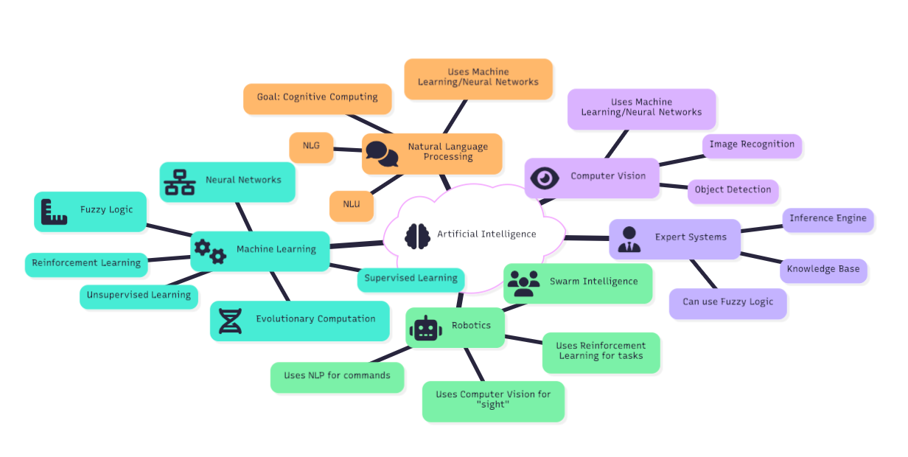
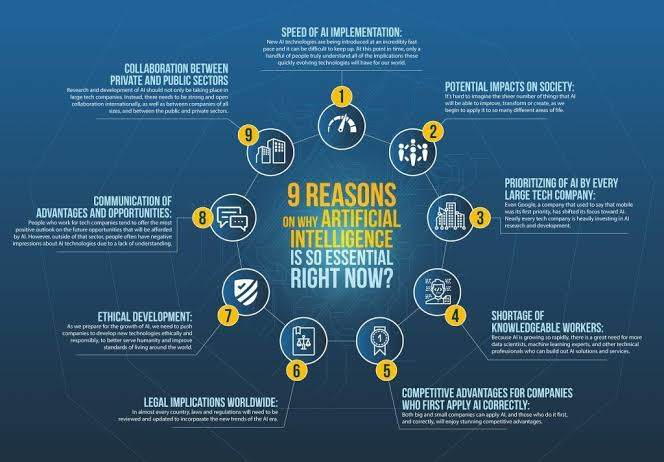

Artificial Intelligence (AI) is a branch of computer science that focuses on creating intelligent machines capable of performing tasks that typically require human intelligence. AI encompasses various subfields, including machine learning, natural language processing, computer vision, and robotics. It has applications in diverse industries such as healthcare, finance, transportation, and entertainment.
Machine learning, a subset of AI, involves training algorithms to learn from data and make predictions or decisions without being explicitly programmed. Natural language processing enables machines to understand and interpret human language, facilitating tasks like speech recognition and sentiment analysis. Computer vision allows machines to analyze and interpret visual information from the world around them.
AI has the potential to revolutionize industries by automating processes, improving decision-making, and enhancing user experiences. However, it also raises ethical considerations regarding privacy, bias, and job displacement. As AI continues to advance, it is crucial to ensure responsible development and deployment of these technologies.


Artificial Intelligence Applications
| AI Field | Core Technology | Applications |
|---|---|---|
| Healthcare | Machine Learning | Medical diagnosis, drug discovery |
| Finance | AI Algorithms | Fraud detection, algorithmic trading |
| Transportation | Computer Vision | Autonomous vehicles, traffic management |
| Entertainment | Natural Language Processing | Recommendation systems, chatbots |
| Marketing | Predictive Analytics | Targeted advertising, customer segmentation |